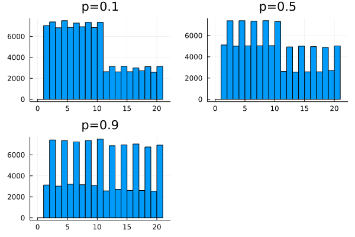
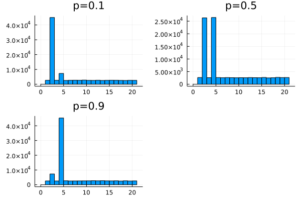
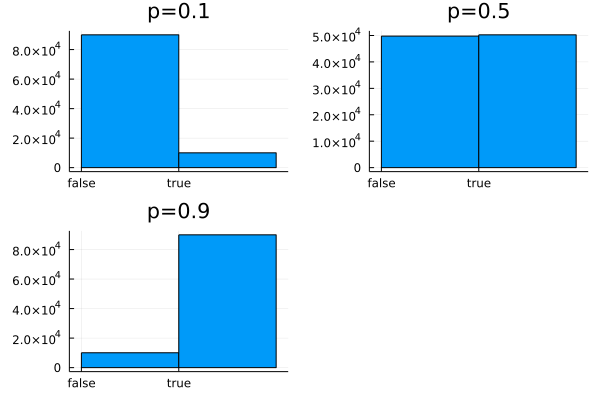
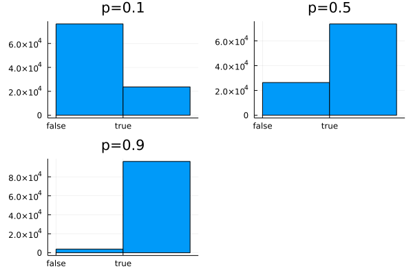
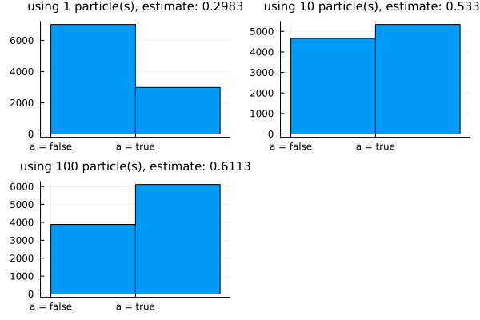

A Bottom-Up Introduction to Gen
This notebook introduces some of the core concepts in Gen from the bottom-up, and uses some mathematical notation.
1. A simple probabilistic Julia program
Consider the following Julia code:
using Gen: uniform_discrete, bernoulli, categorical
function f(p)
n = uniform_discrete(1, 10)
if bernoulli(p)
n *= 2
end
return categorical([i == n ? 0.5 : 0.5/19 for i=1:20])
end;
The function f calls three functions provided by Gen, each of which returns a random value, sampled from a certain probability distribution:
-
uniform_discrete(a, b)returns an integer uniformly sampled from the set{a, .., b} -
bernoulli(p)returnstruewith probabilitypandfalsewith probability1-p. -
categorical(probs)returns the integeriwith probabilityprobs[i]foriin the set{1, .., length(probs)}.
These are three of the many probability distributions that are provided by Gen.
The function f first sets the initial value of n to a random value drawn from the set of integers {1, .., 10}:
n = uniform_discrete(1, 10)
Then, with probability p, it multiplies n by two:
if bernoulli(p)
n *= 2
end
Then, it samples an integer in the set {1, ..., 20}. With probability 0.5 the integer is n, and with probability 0.5 it is uniformly chosen from the remaining 19 integers. It returns this sampled integer:
return categorical([i == n ? 0.5 : 0.5/19 for i=1:20])
If we run this function many times, we can see the probability distribution on its return values. The distribution depends on the argument p to the function:
using Plots
bins = collect(range(0, 21))
function plot_histogram(p)
histogram([f(p) for _=1:100000], bins=bins, title="p=$p", label=nothing)
end
plot(map(plot_histogram, [0.1, 0.5, 0.9])...)

Suppose we wanted to see what the distribution on return values would be if the initial value of n was 2. Because we don’t know what random values were sampled during a given execution, we can’t use simulations of f to answer this question. We would have to modify f first, to return the initial value of n:
function f_with_initial_n(p)
initial_n = uniform_discrete(1, 10)
n = initial_n
if bernoulli(p)
n *= 2
end
result = categorical([i == n ? 0.5 : 0.5/19 for i=1:20])
return (result, initial_n)
end;
Then, we could only include executions in which our desired events did happen, when making our histogram:
function plot_histogram_filtered(p)
executions = 0
results = []
while executions < 100000
(result, initial_n) = f_with_initial_n(p)
if initial_n == 2
push!(results, result)
executions += 1
end
end
histogram(results, bins=bins, title="p=$p", label=nothing)
end;
plot(map(plot_histogram_filtered, [0.1, 0.5, 0.9])...)

Suppose we wanted to ask more questions. We might need to modify each time we have a new question, to make sure that the function returns the particular pieces of information about the execution that the question requires.
Note that if the function always returned the value of every random choice, then these values are sufficient to answer any question using executions of the function, because all states in the execution of the function are deterministic given the random choices. We will call the record of all the random choies a trace. In order to store all the random choices in the trace, we need to come up with a unique name or address for each random choice.
Below, we implement the trace as a dictionary that maps addresses of random choices to their values. We use a unique Julia Symbol for each address:
function f_with_trace(p)
trace = Dict()
initial_n = uniform_discrete(1, 10)
trace[:initial_n] = initial_n
n = initial_n
do_branch = bernoulli(p)
trace[:do_branch] = do_branch
if do_branch
n *= 2
end
result = categorical([i == n ? 0.5 : 0.5/19 for i=1:20])
trace[:result] = result
return (result, trace)
end;
We run the function, and get the return value and the trace:
f_with_trace(0.3)
(14, Dict{Any, Any}(:result => 14, :do_branch => false, :initial_n => 4))
However, this program looks more complicated than the original program. We could make the syntax for tracing more concise:
function add_to_trace!(trace, value, address)
trace[address] = value
return value
end
function f_with_trace_improved(p)
trace = Dict()
n = add_to_trace!(trace, uniform_discrete(1, 10), :initial_n)
if add_to_trace!(trace, bernoulli(p), :do_branch)
n *= 2
end
result = add_to_trace!(trace, categorical([i == n ? 0.5 : 0.5/19 for i=1:20]), :result)
return (result, trace)
end;
We run the function, and get the return value and the trace:
f_with_trace_improved(0.3)
(19, Dict{Any, Any}(:result => 19, :do_branch => false, :initial_n => 5))
Now that we have instrumented the function, we can answer the following different question without needing to modify the function:
“What is the probability that the branch was taken, given that the result took the value 4?”
function query(p, observed_result_value::Int)
executions = 0
do_branch = []
while executions < 100000
(result, trace) = f_with_trace_improved(p)
if trace[:result] == observed_result_value
push!(do_branch, trace[:do_branch])
executions += 1
end
end
histogram(do_branch, bins=[0, 1, 2], align="left", title="p=$p",
label=nothing, xticks=(0:1, ["false", "true"]))
# xticks([0, 1], ["false", "true"])
# title("p = $p")
end;
plot(map(p -> query(p, 4), [0.1, 0.5, 0.9])...)

What about a result value that is greater than 10?
plot(map(p -> query(p, 14), [0.1, 0.5, 0.9])...)
2. Tracing the values of random choices in generative functions
The ability to trace the values of random choices in a probabilistic program (i.e. record the value of each choice in a trace data structure) is one of the basic features of Gen’s built-in modeling language. To write a function in this language we use the @gen macro provided by Gen. Note that the built-in modeling language is just one way of defining a generative function.
Below, we write a @gen function version of the function f defined above, this time using Gen’s tracing instead of our own:
using Gen: @gen
@gen function gen_f(p)
n = {:initial_n} ~ uniform_discrete(1, 10)
if ({:do_branch} ~ bernoulli(p))
n *= 2
end
return {:result} ~ categorical([i == n ? 0.5 : 0.5/19 for i=1:20])
end;
The {address} ~ distribution(args...) expression records the value of the given random choice at the given address into an implicit trace data structure. The trace data structure itself is not a variable in the function, and that code in the body of the function cannot read from the trace. It is an error to use this syntax with the same address twice. Addresses can be arbitrary Julia values. In this notebook, all the addresses will be Julia symbols.
Also note that the trace is not part of the return value:
gen_f(0.3)
2
To run a @gen function and get a trace of the execution, we use the simulate method:
using Gen: simulate
trace = simulate(gen_f, (0.3,));
We can access the values of random choices by indexing into the trace:
trace[:initial_n]
2
We can also print the values of all choices made:
using Gen: get_choices
get_choices(trace)
│
├── :result : 7
│
├── :do_branch : false
│
└── :initial_n : 2
Gen also stores the arguments on which the function was called:
using Gen: get_args
get_args(trace)
(0.3,)
and the return value:
using Gen: get_retval
get_retval(trace)
7
Now, we will answer the same question as above, but this time using our @gen function:
function gen_query(p, observed_result_value::Int)
executions = 0
do_branch = []
while executions < 100000
trace = simulate(gen_f, (p,))
if trace[:result] == observed_result_value
push!(do_branch, trace[:do_branch])
executions += 1
end
end
histogram(do_branch, bins=[0, 1, 2], align="left", title="p=$p",
label=nothing, xticks=(0:1, ["false", "true"]))
end;
plot(map(p -> gen_query(p, 14), [0.1, 0.5, 0.9])...)

3. The probability distribution represented by a generative function
A generative function that terminates with probability one has a probability distribution on its executions. We represent an execution of the function as the map from addresses of random choices to their values. We call this map a choice map (denoted mathematically by $t$). Then, for given arguments to the function (denoted mathematically by $x$), we can list the possible choice maps, and we can compute the probability of each choice map (denoted $p(t; x)$) by taking the product of the probability of each random choice in the map. We can also compute the return value of the function from the arguments and the choice map (the function that computes the return value is denoted mathematically by $f(x ,t)$). Let’s do this for a simple function foo:
@gen function foo(prob_a)
val = true
if ({:a} ~ bernoulli(prob_a))
val = ({:b} ~ bernoulli(0.6)) && val
end
prob_c = val ? 0.9 : 0.2
val = ({:c} ~ bernoulli(prob_c)) && val
return val
end;
Check your understanding by deriving by hand the probability and return value for a few rows of this table.
Based on our table, the probability that foo returns true is:
prob_true(prob_a) = prob_a * 0.6 * 0.9 + (1-prob_a) * 0.9;
Let’s check that using some simulations:
for prob_a in [0.1, 0.5, 0.9]
actual = sum([foo(prob_a) for _=1:10000]) / 10000
println("expected: $(prob_true(prob_a)), actual: $actual")
end
expected: 0.8640000000000001, actual: 0.863
expected: 0.72, actual: 0.7237
expected: 0.5760000000000001, actual: 0.5754
We can also get the log probability that an individual trace would be generated by the function ($\log p(t; x)$), using the get_score method.
Let’s generate a trace below, get its log probability with get_score
using Gen: get_score
trace = simulate(foo, (0.3,))
display(get_choices(trace))
println("log probability: $(get_score(trace))")
│
├── :a : false
│
└── :c : true
log probability: -0.46203545959655873
Check this value against the hand-computed value in our table above.
4. Generating a trace that satisfies certain constraints
So far, we have run generative functions in two ways:
-
Using usual Julia call syntax:
gen_f(0.3) -
Using the
simulatemethod:trace = simulate(gen_f, (0.3,))
We can also generate a trace that satisfies a set of constraints on the valus of random choices using the generate method. Suppose that we want a trace where :a is always true and :c is always false. We first construct a choice map containing these constraints:
using Gen: choicemap
constraints = choicemap((:a, true), (:c, false))
│
├── :a : true
│
└── :c : false
The choicemap constructor above took two elements of the form (address, value). This is equivalent to constructing an empty choice map and then populating it:
choices = choicemap()
choices[:a] = true
choices[:c] = false
Then, we pass the constraints as the third argument to generate, after the function itself and the arguments:
using Gen: generate
(trace, weight) = generate(foo, (0.3,), constraints);
Note that we also get a weight in addition to the trace. We will discuss the weight shortly.
Let’s check that the trace actually agrees with our constraints:
get_choices(trace)
│
├── :a : true
│
├── :b : true
│
└── :c : false
We can also check the return value:
get_retval(trace)
false
When we invoke generate, the choice map is clearly not being sampled from $p(t; x)$, because $p(t; x)$ can generate 6 possible choice maps, whereas our call to generate can only generate 2 possible choice maps. Instead, the generative function employs an internal proposal distribution on choice maps $t$, denoted mathematically by $q(t; x, u)$, where $u$ is the choice map for the constraints.
The internal proposal distribution cannot generate a choice map that disagrees with the constraints, and it can only generate choice maps that could possibly be sampled from $p(t; x)$. Furthermore, we also require the internal proposal distribution to have some probability of sampling any choice map $t$ that agrees with the constraints, and that could be possibly be sampled from $p(t; x)$. These requirements can be summarized by the following:
\[q(t; x, u) > 0 \iff p(t; x) > 0 \land u(a) = t(a) \;\; \forall a \in \mbox{dom}(u) \cap \mbox{dom}(t)\]where $\mbox{dom}$ stands for ‘domain’, and gives the set of addresses in a choice map.
The specific internal proposal distribution used by @gen functions is based on ancestral sampling, which operates as follows: We run the function. To evaluate a ~ expression, we look up the address in the constraints choice map. If the address is present in the constraints choice map, we deterministically return the value stored in the constraints for that address. If the address is not present in the constraints, we sample the value from the distribution in the ~ expression. For the function foo, with constraints $u = {a \mapsto \mbox{true}, c \mapsto \mbox{false}}$, the internal proposal distribution is:
Check your understanding by deriving this distribution by hand.
The weight returned by generate is:
Let’s confirm this using our trace and weight sampled above. Note that we ran generate with prob_a = 0.3:
if trace[:b]
# choice map is {a -> true, b -> true, c -> false}
expected_weight = log(0.3 * 0.6 * 0.1 / 0.6)
else
# choice map is {a -> true, b -> false, c -> false}
expected_weight = log(0.3 * 0.4 * 0.8 / 0.4)
end
println("expected_weight: $expected_weight, actual_weight: $weight")
expected_weight: -3.506557897319982, actual_weight: -3.506557897319982
The ability to generate a trace that satisfies constraints, along with the weight, is a useful primitive operation for implementing a class of approximate inference algorithms called importance resampling. We can implement importance resampling by (i) generating a collection of traces satisfying the constraints, and associated weights, and (ii) returning one of these traces with probability in proportion to its weight:
function my_importance_sampler(gen_fn, args, constraints, num_traces)
traces = []
weights = []
for i=1:num_traces
(trace, weight) = generate(gen_fn, args, constraints)
push!(traces, trace)
push!(weights, weight)
end
# note: the weights are in log-space, so we exponentiate
normalized_weights = exp.(weights) / sum(exp.(weights))
idx = categorical(normalized_weights)
return traces[idx]
end;
A more efficient and numerically robust implementation of importance resampling is provided in Gen’s inference library (see importance_resampling).
Suppose our goal is to sample :a and :b from the conditional distribution given that we have observed :c is false. That is, we want to sample choice map $t$ with probability $0$ if $t(c) = \mbox{false}$ and otherwise probability:
In this simple case, we can compute the probability by hand (assuming prob_a = 0.3). There are three choice maps with nonzero probability:
p1 = 0.3 * 0.6 * 0.1
p2 = 0.3 * 0.4 * 0.8
p3 = 0.7 * 0.1
p1 + p2 + p3
println(p1 / (p1 + p2 + p3))
println(p2 / (p1 + p2 + p3))
println(p3 / (p1 + p2 + p3))
0.09782608695652173
0.5217391304347826
0.3804347826086956
In particular, the probability that a is true given our condition, is:
prob_a_true = (p1 + p2) / (p1 + p2 + p3)
0.6195652173913044
We can sample approximately from this disribution using our importance sampler. As we increase the number of traces, the actual distribution approaches the desired distribution:
using StatsBase: mean
function importance_query(p, N)
constraints = choicemap((:c, false))
as = [my_importance_sampler(foo, (p,), constraints, N)[:a] for _ in 1:10000]
est_prob_a_true = mean(as)
histogram(as, bins=[0, 1, 2], align="left", title="using $N particle(s), estimate: $est_prob_a_true",
label=nothing, xticks=([0, 1], ["a = false", "a = true"]), titlefontsize=10)
end
plot(map(N -> importance_query(0.3, N), [1, 10, 100])...)

Indeed, the estimated probability that a = true is approaching the true probability that we manually computed.
5. Updating a trace
Gen also provides a primitive for updating a trace to conform with new constraints on its choice map. We can use this to implement iterative inference and local optimization algorithms.
Consider the function foo from above. Let’s obtain an initial trace:
(trace, weight) = generate(foo, (0.3,), choicemap((:a, true), (:b, true), (:c, true)));
get_choices(trace)
│
├── :a : true
│
├── :b : true
│
└── :c : true
Now, we use the update method, to change the value of :c from true to false:
using Gen: update, NoChange
constraints = choicemap((:c, false))
(new_trace, weight, discard, retdiff) = update(trace, (0.3,), (NoChange(),), constraints)
get_choices(new_trace)
│
├── :a : true
│
├── :b : true
│
└── :c : false
The update method returns the new trace, as well as a weight, which the log ratio of probabilities of the new choice map ($t’$) and the old choice map ($t$):
The update method also allows you to change the arguments to the function (from $x$ to $x’$), but we will not discuss that in this tutorial.
Let’s confirm that the weight matches a manual calculation:
expected_weight = log(0.3 * 0.6 * 0.1) - log(0.3 * 0.6 * 0.9)
-2.197224577336219
weight
-2.1972245773362196
Doing an update can also cause some addresses to leave the choice map altogether. For example, if we set :a to false, then choice at address :b is no longer include in the choice map.
(trace, weight, retdiff, discard) = update(trace, (0.3,), (NoChange(),), choicemap((:a, false)))
get_choices(trace)
│
├── :a : false
│
└── :c : true
The discard choice map that is returned by update contains the valus for any addresses that were removed from the choice map, as well as any the previous values for any addresses that were constrained:
discard
│
├── :a : true
│
└── :b : true
Note that if we now apply the discard as the constraints, we will get back the original choice map:
(trace, weight, retdiff, discard) = update(trace, (0.3,), (NoChange(),), discard);
get_choices(trace)
│
├── :a : true
│
├── :b : true
│
└── :c : true
The new discard choice map now contains the old constraints:
discard
│
└── :a : false
This illustrates a useful notion of reversibility of the update method, which will be important when using it as a primitive in Metropolis-Hastings algorithms.